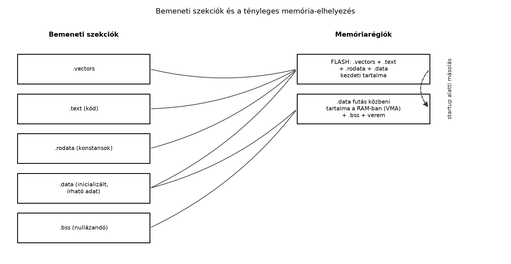

A Reset és boot-folyamat: vektortábla
alfejezet megmutatta, hogy a Cortex-M3 reset után a címtér első nyolc
bájtjából olvassa a kezdeti SP-t és a reset-handler címét. A vektortábla
tehát fizikailag a címtér elején kell legyen — de
honnan tudja a linker, hogy az indító vektortáblának a flash
0x00000000 címére kell kerülnie, a .data
inicializáló képe pedig szintén a flashbe, míg a .data
futásidejű példánya a RAM-ba? Az arm-none-eabi-gcc
alapértelmezett (built-in) linker scriptje egy Linux-szerű, operációs
rendszeres felállást feltételez: nem ismeri a flash/RAM
megkülönböztetést, nem tud a Thumb reset-vektorról, és nem hozza létre
azokat a szimbólumokat, amelyekből a startup kód a másolási és nullázási
tartományokat kiolvassa. Bare-metal firmware-hez ezért saját
linker script kell.
Ez az alfejezet egy minimális, de teljes linker scriptet épít fel:
deklaráljuk a memóriarégiókat, elhelyezzük bennük a szekciókat,
exportáljuk a startup kód számára szükséges szimbólumokat, és bekötjük a
scriptet a buildbe az ld --script kapcsolóján keresztül. A
startup kód belső logikáját (másolóciklus, bss-nullázás) a
Startup kód: .data másolása,
.bss törlése tárgyalja; itt az a szerződés, amit a
startup kód feltételez.
A linker script (linker script, összekötő leírás)
egy szöveges leírás, amellyel a linkernek megadjuk, hogy a bemeneti
objektumfájlok szekcióit milyen sorrendben és milyen abszolút címekre
fűzze össze egy kimeneti ELF-fájlban. A GNU ld saját, kis
nyelvet értelmez; ez a nyelv nem assembly és nem C, bár a
/* ... */ komment, a szimbólumnevek és az aritmetikai
operátorok ismerősek benne.
Két kulcsblokk alkotja a csontvázat:
.text,
.rodata, .data, .bss,
.vectors, …) melyik kimeneti szekcióba kerüljenek, milyen
sorrendben, és a > operátorral azt, hogy melyik
memóriarégióba.A MEMORY blokk szintaxisa:
MEMORY
{
FLASH (rx) : ORIGIN = 0x00000000, LENGTH = 4M
RAM (rwx) : ORIGIN = 0x20000000, LENGTH = 4M
}ORIGIN (röviden org vagy o) a
régió első címe, LENGTH (röviden len vagy
l) a hossza. A hossz K/M utótagot
fogad el, decimális vagy 0x előtagú hexadecimális értéket
egyaránt.r (olvasható), w
(írható), x (végrehajtható), a (allokálható),
i/l (inicializált). Ha olyan szekciót
próbálunk írható régióba tenni, amely nem w, a linker
figyelmeztetést ad — ez hasznos „őrszem” a hibás helykiosztás
ellen.A labor QEMU-profiljában (ARM MPS2+ AN385, Cortex-M3) az alábbi
elrendezést használjuk, a memóriatérkép
alfejezet QEMU-táblázata szerint. A tényleges címtartományt a helyi
QEMU-verzióban a monitor info mtree parancsával érdemes
visszaigazolni.
| Régió | Kezdőcím | Méret | Attribútum | Tipikus tartalom |
|---|---|---|---|---|
| FLASH | 0x00000000 |
4 MiB | rx |
.vectors, .text, .rodata, a
.data betöltési képe (LMA) |
| RAM | 0x20000000 |
4 MiB | rwx |
.data futásidejű mása (VMA), .bss,
verem |
Két megszorítás. A FLASH itt csak
régiónév: QEMU-ban egy betöltött SSRAM-ra adott név,
nem fizikai flash. A RAM pedig egyetlen kanonikus
tartomány: a 0x20400000-tól kezdődő terület ennek
tükre, ezért egyik linker script sem használja második blokként.
A SECTIONS blokkban minden kimeneti szekcióhoz megadjuk a tartalmát
(bemeneti szekció-mintákkal, * helyettesítő karakterrel),
az elhelyezés régióját, és a szükséges igazítást:
SECTIONS
{
.text : {
KEEP(*(.vectors))
*(.text*)
*(.rodata*)
. = ALIGN(4);
} > FLASH
}. (dot) a helyszámláló (location
counter): mindig az aktuális kimeneti cím. A . = ALIGN(4);
azt jelenti, hogy a következő bájt 4 bájtos határra kerüljön. Ez a
startup kód szavas (4 bájtos) másoló- és törlőciklusa miatt fontos: a
ciklus csak akkor áll meg pontosan a végcímen, ha a kezdő-
és a végcím is 4 bájtra igazított.KEEP(...) direktíva megakadályozza,
hogy a linker a --gc-sections (nem hivatkozott szekciók
eldobása) hatására kidobja a vektortáblát. A vektortáblára C-kódból
senki nem hivatkozik szimbolikusan, ezért a garbage collector
„feleslegesnek” látná — a KEEP nélkül a firmware reset után
azonnal hibás címre ugrana. Ez a Reset és
boot-folyamat: vektortábla alfejezet KEEP
követelményének a linkeroldali párja.ENTRY(Reset_Handler) (a script
elején vagy végén) megadja az ELF belépési pontját; a szimulátor és a
debugger innen tájékozódik. Ez nem azonos a hardveres reset-vektorral,
de bare-metal esetben ugyanazt a szimbólumot jelöli..data kettős életeA linker kétféle címet tart nyilván minden szekcióhoz:
.data
VMA-ja a RAM-ban van..data
LMA-ja a flashben van, mert az inicializált változók értékeit a nem
felejtő tároló tartalmazza.A > RAM AT> FLASH szintaxis pontosan ezt fejezi
ki: a szekció a RAM-ba kerül (VMA), de a tartalma a flashből töltődik
(LMA). Alapértelmezésben LMA = VMA; a felülírás csak ott szükséges, ahol
a kettő eltér — tipikusan a .data-nál. A
.bss-nél az LMA-nak nincs gyakorlati szerepe, mert nincs
betöltendő tartalma: csupa nulla, amit a startup kód állít elő. Ezért a
.bss (NOLOAD) típusú, és nem növeli a firmware
bináris méretét.
A VMA és az LMA a linker fogalma. Az ELF-fájlban nem
ugyanott jelenik meg a kettő. A szekciófejléc (Elf32_Shdr,
Elf64_Shdr) egyetlen címmezőt tartalmaz, az
sh_addr-t: ez a szekció futásidejű címe, vagyis a VMA.
Külön LMA-mező nincs. A betöltési cím a
programfejlécben (Elf32_Phdr) látszik: a
LOAD szegmens p_vaddr (VirtAddr)
mezője a futásidejű, p_paddr (PhysAddr) mezője
a fizikai, betöltési cím. A readelf -SW az előbbit, a
readelf -lW az utóbbit mutatja. Az objdump -h
LMA-oszlopa származtatott érték: az objdump a szekciót
tartalmazó LOAD szegmensből számolja ki,
p_paddr + (sh_addr − p_vaddr) alakban.
Az alábbi ábra a lab-mps2.ld bemeneti szekcióit (balra)
és a tényleges kimeneti elhelyezést (jobbra) kapcsolja össze. A
.data két nyíllal szerepel: egy a FLASH-be (LMA, a
betöltési kép), egy a RAM-ba (VMA, a futásidejű másolat) — ez pontosan a
fenti kettősség.

A linker scriptből szimbólumokat exportálhatunk a
C/assembly oldal felé. A _sdata = .; forma azt jelenti: „a
_sdata szimbólum értéke legyen a helyszámláló aktuális
értéke”. Ez cím, nem változó: a C oldalon
extern char _sdata[]; alakban kell deklarálni, hogy a
_sdata név önmagában pointerré alakuljon (a gyakori hiba:
extern uint32_t _sdata; majd &_sdata — ez
a címzés szempontjából ugyanoda vezet, de a típus félrevezető).
| Szimbólum | Érték | Jelentés |
|---|---|---|
_sidata |
LOADADDR(.data) |
a .data inicializáló képének kezdete a flashben |
_sdata |
.data VMA kezdete |
a másolás célja a RAM-ban |
_edata |
.data VMA vége |
a másolás vége (kizárólagos) |
_sbss |
.bss kezdete |
a nullázás kezdete |
_ebss |
.bss vége |
a nullázás vége (kizárólagos) |
_estack |
ORIGIN(RAM) + LENGTH(RAM) |
a kezdeti SP értéke — egyeznie kell a vektortábla 0. szavával |
A _sidata értékét a LOADADDR(.data) adja
vissza: a .data kimeneti szekció betöltési
címét (LMA), amely a függvény szerződése szerint mindig
abszolút cím. A kanonikus script a hozzárendelést a
.data blokk után írja, közvetlenül a szekció mellé. Ez
olvashatósági döntés, nem nyelvi követelmény. A linker
kétféle kifejezést különböztet meg. Az elhelyezési
kifejezéseket (például a helyszámlálót, ALIGN-t vagy egy
szekció kezdőcímét meghatározó értéket) ott és akkor kell kiértékelnie,
ahol a helykiosztás tart. Egy egyszerű
szimbólum-hozzárendelést viszont, amelytől semmilyen
elhelyezés nem függ, a helykiosztás végén is kiértékelhet. A
_sidata = LOADADDR(.data); ilyen, ezért a
.data előtt vagy a .data blokkon belül leírva
is ugyanazt az abszolút címet adja. A GNU ld 2.42 és az
ld.lld egy minimális scripttel mindhárom helyen ugyanazt az
A típusú értéket adta.
lab-mps2.ld és a hozzá tartozó buildMunkakönyvtár: ~/arm-labor/cm/a065/ —
az alfejezet minden laborfájlja ide kerül, és minden parancs innen
futtatandó (a könyvtárrendet a Labor-alapkörnyezet alfejezet írja le).
mkdir -p ~/arm-labor/cm/a065
cd ~/arm-labor/cm/a065A példa linkeléséhez a lab-startup.o és a
lab-main.o is kell; ezek forrása
(lab-startup.s, lab-main.c) csak a Startup kód és a Firmware build
és QEMU-betöltés munkafolyamat alfejezetben készül el. Addig a
linker script önmagában vizsgálható; utána a két forrást másold át ide
(cp ~/arm-labor/cm/a066/lab-startup.s ~/arm-labor/cm/a067/lab-main.c .),
és fordítsd le őket a saját könyvtárukban megadott kapcsolókkal.
Ez a II. rész kanonikus linker scriptje. A startup kód, a firmware
build és a későbbi laborok (köztük a II.
záróprojekt) ezt használják változatlanul, vagy ennek a másolatát
bővítik. A párja a Startup kód alfejezet
lab-startup.s fájlja: a vektortábla szekcióneve
mindkettőben .vectors, a belépési pont
Reset_Handler.
/* lab-mps2.ld — a II. rész kanonikus linker scriptje
* Target: qemu-system-arm -machine mps2-an385 (Cortex-M3)
* A "FLASH" itt csak régiónév: QEMU-ban a 0x00000000-tól induló, betöltött
* ZBT SSRAM1, nem fizikai flash. A RAM a 4 MiB-os kanonikus SRAM-tartomány;
* a 0x20400000-tól látszó tükörterületet szándékosan nem használjuk. */
ENTRY(Reset_Handler)
MEMORY
{
FLASH (rx) : ORIGIN = 0x00000000, LENGTH = 4M
RAM (rwx) : ORIGIN = 0x20000000, LENGTH = 4M
}
_Min_Stack_Size = 0x1000; /* ennyi hely mindig maradjon a veremnek */
SECTIONS
{
.vectors : {
KEEP(*(.vectors)) /* a 0x00000000-ra; a --gc-sections se dobja el */
} > FLASH
.text : {
*(.text*)
*(.rodata*)
. = ALIGN(4);
} > FLASH
.ARM.exidx : { /* unwind-táblák, ha a fordító készít ilyet */
*(.ARM.exidx* .gnu.linkonce.armexidx.*)
} > FLASH
.data : ALIGN(4) { /* VMA: RAM, LMA: FLASH */
_sdata = .;
*(.data*)
. = ALIGN(4); /* a vég is szóhatár: a szavas másolás nem lép túl */
_edata = .;
} > RAM AT> FLASH
_sidata = LOADADDR(.data);
.bss (NOLOAD) : ALIGN(4) {
_sbss = .;
*(.bss*)
*(COMMON)
. = ALIGN(4);
_ebss = .;
} > RAM
_estack = ORIGIN(RAM) + LENGTH(RAM);
ASSERT(ADDR(.vectors) == ORIGIN(FLASH), "lab-mps2.ld: .vectors is not at the start of FLASH")
ASSERT(_sidata % 4 == 0 && _sdata % 4 == 0 && _edata % 4 == 0,
"lab-mps2.ld: .data bounds not word aligned")
ASSERT(_sbss % 4 == 0 && _ebss % 4 == 0, "lab-mps2.ld: .bss bounds not word aligned")
ASSERT(_ebss + _Min_Stack_Size <= _estack,
"lab-mps2.ld: .data/.bss collide with the stack reserve")
ASSERT(_estack % 8 == 0, "lab-mps2.ld: _estack is not 8-byte aligned")
}Néhány döntés indoklása:
.vectors saját kimeneti szekció, a FLASH
elején; az első ASSERT ezt linkeléskor ellenőrzi..rodata-t a .text-tel egy régióba
tesszük, mert konstansokat nem írunk; így nem pazarolunk RAM-ot. Az
esetleges .ARM.exidx unwind-táblák is a
FLASH-be kerülnek, nem árva szekcióként a linker által
választott helyre..data és a .bss kezdete
(ALIGN(4) a szekciófejben) és vége
(. = ALIGN(4) a záró szimbólum előtt) is szóhatárra esik.
Így a szekció tartalma akkor is szavas ciklussal másolható, illetve
törölhető, ha a benne lévő objektumok mérete 1, 3 vagy 5 bájt: a linker
a végét kitölti a következő szóhatárig. A _sidata (LMA)
igazítását is ellenőrizzük, mert a másolás forrása is szavanként
olvas.*(COMMON) a
-fcommon/-fno-common fordítási beállítástól
függő, inicializálatlan globálisokat gyűjti be; a bss-be
sorolásuk biztosítja, hogy a startup nullázza őket..bss (NOLOAD) jelölése deklaratív:
dokumentálja, hogy nincs betöltendő tartalom. A NOBITS
típus miatt a linker egyébként sem írna ki bájtokat a fájlba.ASSERT-ek a szerződést linkeléskor
kényszerítik ki: ha valamelyik határ nem szóhatár, vagy a
.data + .bss és a legalább
_Min_Stack_Size bájtos veremtartalék nem fér el a RAM-ban,
a linkelés hibával megáll. A verem a RAM tetejéről lefelé nő, ezért a
legegyszerűbb ütközésvizsgálat az, hogy a .bss vége és az
_estack között maradjon elég hely. A tényleges veremigény a
programtól függ; a _Min_Stack_Size egy tervezési érték, nem
mért adat.ld --script kapcsolóHa közvetlenül az ld-t hívjuk, a scriptet a
--script (egybetűs alakja -T) kapcsolóval
adjuk át:
arm-none-eabi-ld --script=lab-mps2.ld -o lab-firmware.elf \
lab-startup.o lab-main.oA -T a GNU ld összes verziójában elérhető,
és a --script hosszú alak ugyanezt jelenti. Ha a GCC
drivert használjuk (ez a szokásos, mert így a -mcpu,
-mthumb és a könyvtárak beállítása egységes marad), a
scriptet a -Wl, prefixszel adjuk tovább, illetve a
-T rövidítést a driver közvetlenül is elfogadja és
továbbadja a linkernek:
CC := arm-none-eabi-gcc
LDSCRIPT := lab-mps2.ld
CFLAGS := -mcpu=cortex-m3 -mthumb -ffreestanding -nostdlib -g3 -O0
LDFLAGS := -Wl,--script=$(LDSCRIPT) -Wl,-Map=lab-firmware.map \
-Wl,--gc-sections
OBJS := lab-startup.o lab-main.o
# A linker script is előfeltétel: ha csak a script változik (MEMORY, ASSERT),
# a Make újralinkel, újrafordítás nélkül. A receptben az explicit $(OBJS) áll,
# nem a $^: az a scriptet egyszerű bemeneti fájlként is átadná a linkernek.
lab-firmware.elf: $(OBJS) $(LDSCRIPT)
$(CC) $(CFLAGS) $(LDFLAGS) -o $@ $(OBJS)
%.o: %.s
$(CC) $(CFLAGS) -c -o $@ $<
%.o: %.c
$(CC) $(CFLAGS) -c -o $@ $<A $(LDSCRIPT) előfeltételként azért kell, mert a
következő feladatok éppen a scriptet módosítják. Nélküle egy sikeres
build után a Make a régi ELF-et késznek tekintené, és egy elrontott
ASSERT sem állítaná meg. A helyettesítő eszközlánccal
kipróbálva: a script puszta módosítása után csak a linkelés futott le,
objektumfordítás nélkül. A szándékosan túl nagyra állított
_Min_Stack_Size mellett a következő make a
lab-mps2.ld: .data/.bss collide with the stack reserve
hibával, 2-es állapottal leállt. A régi, csak az objektumoktól függő
szabállyal ugyanez a make up to date üzenetet
adott, 0-s állapottal.
A -Wl,-Map= kapcsoló elkészíti a map
fájlt: ez a szekciók pontos VMA/LMA címeit és méreteit,
valamint a szimbólumok értékét listázza. Overlap- vagy mérethibánál
gyakorlatilag mindig a map fájlt olvassuk, nem a forráskódot. A
--gc-sections és a KEEP együttműködése fentebb
már előkerült: a KEEP nélkül a vektortábla eltűnik.
Segédeszközök a script helyességének ellenőrzésére:
arm-none-eabi-ld --verbose — kiírja a beépített
alapértelmezett scriptet; érdemes összevetni a sajátunkkal, hogy lássuk,
mit nem örököltünk.arm-none-eabi-nm -n lab-firmware.elf — címsorrendben
listázza a szimbólumokat.arm-none-eabi-size lab-firmware.elf — összegzi a
.text/.data/.bss méretét.arm-none-eabi-objdump -h lab-firmware.elf — a kimeneti
szekciók listája VMA- és LMA-oszloppal (az LMA-t az objdump a
programfejlécből számolja).arm-none-eabi-readelf -SW és
-lW lab-firmware.elf — a szekciófejlécek
(sh_addr, típus, méret), illetve a LOAD
szegmensek (VirtAddr, PhysAddr,
FileSiz, MemSiz).A kanonikus lab-mps2.ld, a Startup
kód lab-startup.s-e és a firmware
build lab-main.c-je együtt linkelve (Clang +
ld.lld, -O0) ezeket a szimbólumértékeket adta.
GNU eszközlánccal a konkrét címek eltérhetnek, a feltételeknek viszont
teljesülniük kell:
00000041 T Reset_Handler
0000006b T Default_Handler
00000081 T main
00000214 A _sidata
20000000 D _sdata
20000010 D _edata
20000010 B _sbss
20000020 B _ebss
20400000 A _estackAz ellenőrzési feltételek: (1) _sdata és
_edata 0x2000.... tartományban van,
_sidata viszont 0x0000.... (flash)
tartományban; (2) _sidata A (abszolút) típusú,
mert a LOADADDR abszolút LMA-t ad vissza; (3) minden határ
4-gyel osztható (a .data itt 13 bájtnyi objektumot
tartalmaz, a szekció mégis 16 bájt, mert a vége szóhatárra van
kitöltve); (4) _ebss + _Min_Stack_Size <= _estack; (5) a
.vectors a 0x00000000-n van, a második szava
(0x00000041) páratlan, és bit0 nélkül a
.text-be mutat. Az (5) pontot a vektortábla-ellenőrző program gépiesen vizsgálja. A
(3) és a (4) pontot az ASSERT-ek miatt nem is lehet
megsérteni úgy, hogy a linkelés sikeres legyen.
Ellenpróba. Ha a .data blokkból
kivesszük a záró . = ALIGN(4); sort, a linkelés a
lab-mps2.ld: .data bounds not word aligned hibával megáll
(_edata = 0x2000000d). Az ASSERT
kikapcsolásával a hiba futásidőben jelentkezik, és hogy hogyan, az a
startup ciklusán múlik: ezt a Startup kód
alfejezet mutatja meg.
| Tünet | Hipotézis | Adatgyűjtés | Egy változtatás |
|---|---|---|---|
region 'RAM' overflowed by 1234 bytes |
a RAM-ba szánt tartalom meghaladja a LENGTH-et |
arm-none-eabi-size lab-firmware.elf,
lab-firmware.map |
LENGTH növelése (ha a valós hardver engedi) vagy egy
nagy statikus tömb const-tá alakítása |
section .bss at 0x20000040 overlaps .data at 0x20000040 |
hiányzó ALIGN vagy elrontott sorrend a SECTIONS
blokkban |
objdump -h |
a .bss blokk elé . = ALIGN(4);, illetve a
szekciók sorrendjének ellenőrzése |
warning: section .data is writable but region 'FLASH' is not |
írható szekciót próbáltunk rx régióba tenni |
a figyelmeztetés szövege | attribútumlista vagy a > régió javítása |
a .data változók a flashben maradnak, a RAM-ban szemét
van |
hiányzó AT> FLASH vagy hiányzó
LOADADDR |
objdump -h LMA-oszlopa; startup másolóciklus |
> RAM AT> FLASH és
_sidata = LOADADDR(.data); |
| reset után azonnal hard fault | a vektortáblát a --gc-sections kidobta |
objdump -s -j .vectors,
lab-check-vectors.py |
KEEP(*(.vectors)) |
lab-mps2.ld: .data/.bss collide with the stack reserve |
a .data + .bss és a veremtartalék nem fér
el a RAM-ban |
size -A, map fájl |
nagy statikus tömb const-tá alakítása vagy kisebb
puffer; a _Min_Stack_Size csökkentése csak mért veremigény
alapján |
lab-mps2.ld: .data bounds not word aligned |
a .data vagy .bss vége nincs szóhatárra
igazítva |
map fájl, nm -n |
. = ALIGN(4); a záró szimbólum elé |
A tipikus hiba diagnosztikája mindig ugyanaz a ciklus: tünet
→ hipotézis → adat
(map/objdump/nm) → egyetlen
változtatás → újramérés. A linker script hibái jellemzően nem
fordítási hibaként, hanem futásidejű hard faultként vagy csendesen rossz
adatként jelentkeznek, ezért a map fájl olvasása nem luxus, hanem a
hibakeresés első lépése.
.data VMA-ja
és LMA-ja között. Miért nem lehet a .bss-nek értelmes
LMA-ja? Mit ír az nm az _sidata és a
_sdata szimbólumok mellett, és miért tér el a betűjelük?
Végül a saját firmware-eden keresd meg a .data szekció
sh_addr címét (readelf -SW), az őt hordozó
LOAD szegmens VirtAddr és
PhysAddr értékét (readelf -lW), valamint a
.data VMA- és LMA-oszlopát (objdump -h), és
mondd meg, melyik érték melyikkel egyezik.lab-mps2.ld scriptet egy külön
.rodata kimeneti szekcióval, amely a .text
után, de még a flashben helyezkedik el, és exportálj egy
_erodata szimbólumot a végére. Igazítsd 4 bájtos határra,
majd ellenőrizd a objdump -h kimenetén, hogy a
.rodata LMA-ja egyezik a VMA-jával (mert flashben
fut).RAM régió
LENGTH-jét 8K-ra, tegyél a
lab-main.c-be egy
static volatile uint8_t big[6144]; tömböt, és építsd újra a
firmware-t. Olvasd ki a linker hibaüzenetét, majd a map fájlból keresd
meg, melyik szekció és melyik szimbólum felelős a túlcsordulásért.
Ezután állítsd vissza a LENGTH-et, és igazold, hogy a hiba
eltűnt. (A laborban ez az egyetlen kontrollált, jelölt
memóriarégió-módosítás; más címet ne írj át.).text, .data és .bss
méretét az arm-none-eabi-size -A kimenetéből. Hasonlítsd
össze a -O0 és -O2 fordítás mellett kapott
.text méreteket, és fogalmazd meg, miért nem változik a
.bss mérete érdemben az optimalizálástól.1. megoldás — Segítség. Gondold át külön, mit jelent
“hol fut” (VMA) és “honnan tölt be” (LMA) egy szekció esetén, és hogy a
.bss-nek van-e egyáltalán betöltendő tartalma.
1. megoldás — Teljes megoldás. A VMA a szekció
futásidejű címe: a .data-t a RAM-ban olvassa és írja a
program. Az LMA a betöltési cím: a .data inicializáló
tartalma a flashben van, mert a RAM tartalma áramkimaradás után
elveszik. Az ELF-fájlban a kettő nem ugyanabban a
fejlécben van. A szekciófejléc sh_addr mezője a
szekció futásidejű címe (VMA); külön LMA-mezője nincs. Az LMA a linker
által kiszámolt külön tulajdonság, amely a LOAD
programfejléc PhysAddr (p_paddr) mezőjében
jelenik meg, az objdump -h pedig ebből vezeti le a
szekciónkénti LMA-oszlopot. A kanonikus firmware
(lab-mps2.ld + lab-startup.s +
lab-main.c, Clang + ld.lld linkelte, GNU
readelf/objdump 2.42 olvasta) a három
nézetben, a lényeges sorokra szűkítve:
$ readelf -SW lab-firmware.elf
[Nr] Name Type Addr Off Size ES Flg Lk Inf Al
[ 4] .data PROGBITS 20000000 020000 000010 00 WA 0 0 4
[ 5] .bss NOBITS 20000010 020010 000010 00 WA 0 0 4
$ readelf -lW lab-firmware.elf
Type Offset VirtAddr PhysAddr FileSiz MemSiz Flg Align
LOAD 0x020000 0x20000000 0x00000214 0x00010 0x00010 RW 0x10000
LOAD 0x020010 0x20000010 0x20000010 0x00000 0x00010 RW 0x10000
$ objdump -h lab-firmware.elf
Idx Name Size VMA LMA File off Algn
3 .data 00000010 20000000 00000214 00020000 2**2
CONTENTS, ALLOC, LOAD, DATA
4 .bss 00000010 20000010 20000010 00020010 2**2
ALLOCA .data szekció sh_addr értéke
0x20000000: ez a VMA, a RAM-beli futásidejű cím. A
.data-t hordozó LOAD szegmens
VirtAddr mezője ugyanez, a PhysAddr viszont
0x00000214: ez a flashbeli betöltési cím, és egyben a
_sidata értéke. Az objdump -h sora a kettőt
egymás mellé teszi (VMA 20000000, LMA
00000214), az LMA-oszlop azonban nem a szekciófejlécből
jön.
A .bss-nél két dolgot kell külön kezelni. A szekciónak
van futásidejű címe
(sh_addr = 0x20000010), és memóriát
foglal: a Size mező 16 bájt, a szegmensben pedig
MemSiz = 0x10. Ide kerülnek a változók. Betöltendő
bájtja viszont nincs: a típusa NOBITS, a fájlban
nem foglal helyet (FileSiz = 0), és a betöltő sem másol
belőle semmit. A tartalma csupa nulla, a nullázási
igényt pedig a startup kód teljesíti a
_sbss–_ebss tartományon. Ezért a
.bss-nél az LMA-nak nincs gyakorlati szerepe, a
.data-nál viszont ez a másolás forrása. Az objdump által
kiírt .bss-LMA is csak a szegmens-elrendezésből adódik, és
linkerfüggő. Az ld.lld itt külön szegmenst nyit, és
PhysAddr = VirtAddr. A GNU ld 2.42 egy hasonló scripttel
(.data VMA 0x20000, LMA 0x10001)
a .bss-t a .data szegmensébe tette
(FileSiz 0x4, MemSiz 0x14), ezért az objdump a
.bss-hez a semmire nem használt 0x10005 LMA-t
írta ki. Az nm az _sidata mellett
A-t (abszolút) ír, mert a LOADADDR a
szerződése szerint abszolút címet ad vissza, akárhol áll a
hozzárendelés. A _sdata a .data blokkon belül,
a helyszámlálóból (.) kapja az értékét, ezért a szekcióhoz
kötött D (inicializált adatszekció) jelölést kap.
2. megoldás — Segítség. A .rodata a
.text után, de még FLASH-ben marad — nincs szüksége
AT> felülírásra, mert a VMA és az LMA itt megegyezik.
Gondold át azt is, hogy a kanonikus .text blokk már
tartalmaz egy *(.rodata*) mintát. Egy bemeneti szekció
ahhoz a kimeneti szekcióhoz kerül, amelynek mintája a scriptben
elsőként illeszkedik rá.
2. megoldás — Teljes megoldás. A kanonikus
.text blokkban szerepel a *(.rodata*) minta.
Egy bemeneti szekció (a fordító által előállított .rodata,
.rodata.str1.1 stb.) ahhoz a kimeneti szekcióhoz kerül,
amelynek mintája a scriptben elsőként illeszkedik rá. Ha tehát az új
.rodata blokkot egyszerűen a .text után
szúrjuk be, a konstansokat a .text már elfogyasztotta, és
az új kimeneti szekció üres marad. A mintát ezért a
.text-ből ki kell venni, és át kell vinni az új szekcióba.
A módosított SECTIONS-részlet:
.text : {
*(.text*)
/* a *(.rodata*) innen átkerült a saját kimeneti szekciójába */
. = ALIGN(4);
} > FLASH
.rodata : ALIGN(4) { /* VMA = LMA: flashben marad, nincs AT> */
*(.rodata*)
. = ALIGN(4);
_erodata = .; /* a konstansok vége */
} > FLASH
.ARM.exidx : { /* változatlan, a .rodata után */
*(.ARM.exidx* .gnu.linkonce.armexidx.*)
} > FLASHA bemeneti szekció a fordító által egy objektumban
előállított rész (például lab-main.o:(.rodata)), a
kimeneti szekció a linker scriptben definiált, az
ELF-be kerülő egység (.rodata). A map fájlban a kimeneti
szekció sora alatt a hozzá rendelt bemeneti szekciók láthatók, ezért ott
ellenőrizhető, hová kerültek a konstansok. A helyettesítő eszközlánccal
(ld.lld) egy const char msg[] = "lab-rodata";
konstanssal kipróbálva: ha a .text megtartja a mintát, az
új .rodata mérete 0 bájt, és a msg a
.text-be kerül (nm: T). A
javított scripttel a .rodata 12 bájt, a msg
benne van (nm: R), és az _erodata
pontosan a szekció végére mutat. A GNU ld ugyanígy viselkedik.
Az objdump -h-ban a .rodata VMA- és
LMA-oszlopa egyezik, mert nincs AT> felülírás: a szekció
flashben fut, nem másoljuk. A külön kimeneti szekció nem azért kell,
mert a .text-be gyűjtött konstansok végét nem lehetne
jelölni. A .text blokkon belül is elhelyezhető szimbólum a
minta előtt és után (például
_srodata = .; *(.rodata*) _erodata = .;). A külön szekció
azért hasznos, mert a map fájlban, az objdump -h-ban és a
size -A-ban önálló sorként, saját mérettel jelenik meg.
3. megoldás — Segítség. A linker hibaüzenete
megnevezi, melyik régió csordult túl — innen indulj a map
fájl „Memory Configuration” szakaszával, és nézd meg, melyik szekció
viszi a legtöbb helyet.
3. megoldás — Teljes megoldás. A várt hibaüzenet
alakja: region 'RAM' overflowed by N bytes. A map fájlban a
Memory Configuration szakasz adja a régiók méretét és a
hozzájuk rendelt szekciók listáját; a túlcsordulás tipikusan a
.bss-ből vagy egy nagy statikus tömbből származik. A helyes
diagnózis: először a .bss méretét nézzük
(size -A), majd a legnagyobb szimbólumot
(nm --size-sort). A kanonikus scriptben a 8 KiB-os RAM-ban
a 6 KiB-os tömb a .bss-be még befér, de a 4 KiB-os
veremtartalékkal együtt már nem, ezért itt a
lab-mps2.ld: .data/.bss collide with the stack reserve
ASSERT-üzenet jelenik meg; egy 8 KiB-nál nagyobb tömb a
region 'RAM' overflowed hibát adja. Ha a valós hardveren a
RAM ennél nagyobb (a QEMU-gépen 4 MiB), a LENGTH
visszaállítása a helyes megoldás; ha szűkös a RAM, a nagy tömböt
const-tá kell alakítani, hogy átkerüljön a flashbe.
Ellenpróba: a LENGTH visszaállítása után a
map fájlban a Memory Configuration soraiban a
„used” érték kisebb kell legyen a „size”-nál.
4. megoldás — Segítség. Gondold át, mi okozza a
.text méretváltozását optimalizáláskor, és miért más a
.bss tartalmának eredete (deklaráció, nem generált
kód).
4. megoldás — Teljes megoldás. A
size -A táblázatosan listázza a szekciókat. Az
-O2 tipikusan csökkenti a .text-et (holt kód
eltávolítása, kisebb utasításszekvenciák), esetleg növeli (beágyazott
memcpy-k, loop unrolling). A .bss mérete azért
nem változik érdemben, mert a benne lévő objektumok (globális,
inicializálatlan tömbök, pufferek) a forráskód deklarációiból
származnak, nem a generált kódból; az optimalizálás csak akkor nyúl
hozzá, ha a teljes objektumot ki tudja dobni (pl. static és
soha nem olvasott). Ez a „fordítási szint hatása a generált kódra”
kérdéskör, amelyet a Fordítói optimalizálási szintek
hatása a generált kódra alfejezet tárgyal részletesen.
A linker script a MEMORY és SECTIONS blokkból épül fel: a MEMORY
deklarálja a régiókat (név, ORIGIN, LENGTH,
attribútumok), a SECTIONS végzi a tényleges helykiosztást. A
.data esetében a VMA (RAM) és az LMA (flash) szétválik; a
> RAM AT> FLASH szintaxis és a
LOADADDR(.data) fejezi ki a kettősséget. A scriptből
exportált
_sdata/_edata/_sbss/_ebss/_sidata
szimbólumok a startup kód másolási és nullázási szerződése. A scriptet
az ld --script= (vagy -T) kapcsolóval kötjük
be, és a map fájllal ellenőrizzük. A tipikus hibák a szekció-átfedés, a
régiótúlcsordulás és a KEEP hiánya miatt kidobott
vektortábla.
Továbbhasznált definíciók:
.data VMA-ja a RAM-ban, LMA-ja a flashben van. Az
ELF-ben a VMA a szekciófejléc sh_addr mezője, az LMA a
LOAD programfejléc PhysAddr mezőjében
látszik.> operátorral helyez szekciókat.A linkek és a dokumentumverziók közös állapota az Olvasói útmutató forrásállapot-táblájában van; itt csak az alfejezet saját megállapításai szerepelnek.
developer.arm.com → support.arm.com
átirányítás megerősített), de a JS-renderelt oldal miatt a pontos
kiadásbetű automatikus lekéréssel nem volt kinyerhető..section direktíva és a szekciónevek
konvenciói. Ellenőrizve: a jelenlegi kiadás binutils 2.47.LOADADDR,
a KEEP, az ENTRY és a --script
pontos szemantikája. Ellenőrizve: ugyanaz a binutils 2.47-es
kiadás tartalmazza.master ághoz tartozó dokumentáció,
nem egy konkrét kiadott verzióhoz kötött; a ténylegesen telepített
QEMU-verzió dokumentációja ettől eltérhet.Ellenőrzési hiányok, amelyek a fenti ellenőrzés után is
fennmaradnak: a lab-mps2.ld scriptet a
helyettesítő eszközlánccal (Clang + ld.lld) linkeltük a
lab-startup.s-sel és a lab-main.c-vel, a
közölt nm-értékek ebből származnak; a firmware
Unicorn-alapú Cortex-M3 emulátorban (tools/cm-run.py)
boot ok-ot írt. Az ASSERT-ek ellenpróbája
(igazítás nélküli .data) ugyanígy készült. A GNU
ld ugyanezt a script-nyelvet érti, de a konkrét címek és
üzenetszövegek eltérhetnek. Az Ubuntu 24.04-re telepített
arm-none-eabi-gcc/binutils pontos verzióját a
laborban kell rögzíteni. Az MPS2-AN385 FLASH/RAM memóriatérkép a
könyvben jelzett munkafeltételezés, amelyet a helyi QEMU
info mtree kimenetével kell visszaigazolni.
Ellenőrzési hiányok: (1) A fenti FLASH/RAM
memóriatérkép munkafeltételezés, amelyet a helyi
QEMU-verzió info mtree kimenetével vagy az
arm-none-eabi-ld konkrét alapértelmezett scriptjével kell
visszaigazolni. (2) A közölt nm-kimenet a helyettesítő
eszközláncból származik, nem GNU ld-ből. (3) A
region 'RAM' overflowed by N bytes üzenet és a
section ... overlaps ... üzenet szövege a GNU
ld verziójától függően kismértékben eltérhet; a konkrét
szöveget a telepített arm-none-eabi-ld forrásában vagy a
helyi man oldalon kell ellenőrizni. (4) A Makefile-ban szereplő
-Wl,--script= és a -T viszonyát a telepített
GCC-verzió dokumentációjával érdemes megerősíteni.